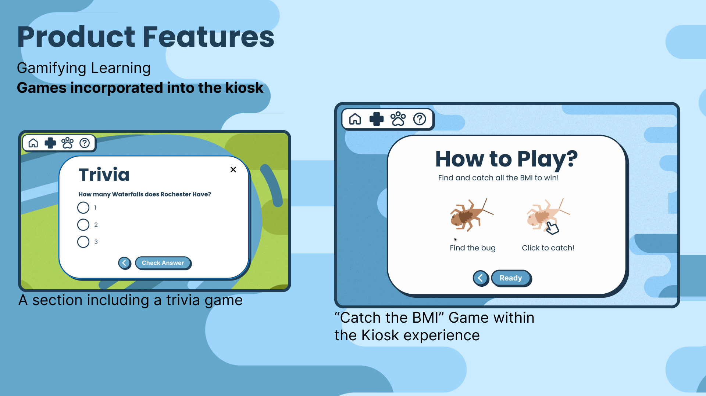
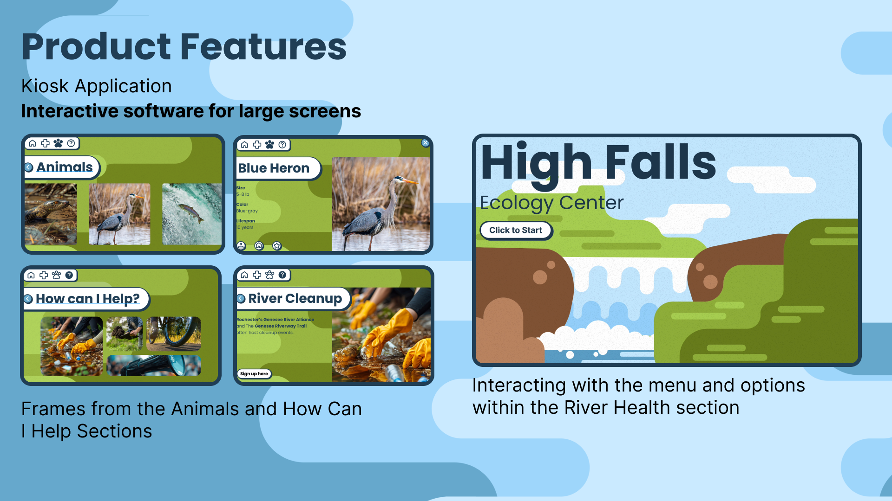

Case Study · Interactive Kiosk
High Falls
Kiosk.
Ecological education for Rochester's newest state park.

Case Study · Interactive Kiosk
Ecological education for Rochester's newest state park.
01 · Overview
As part of the ROC the Riverway project, Rochester High Falls is being renovated and transformed into a New York State Park. The mission of High Falls State Park is to create a center for ecological education while building connectivity within downtown Rochester.
I was tasked with designing an interactive touch kiosk to serve as the primary educational interface for park visitors of all ages.
02 · The Challenge
The kiosk needed to make environmental learning genuinely engaging for a broad audience, from young children to adults, while clearly communicating complex ecological information in an accessible, touch-friendly format.
03 · Research
I identified three primary user groups with distinct needs and behaviors. Designing for all three at once meant thinking carefully about literacy levels, attention spans, and what each group was actually hoping to get out of a visit to the park.

Ages 5-17

Ages 18-65

Ages 18-65
04 · Design Process
I organized the kiosk into four distinct sections, each addressing a different learning goal and visitor need. This structure lets visitors explore at their own pace and go deeper into the topics that interest them most.
Information about the Genesee River ecosystem, water quality, and the impact of the park restoration.
Local wildlife profiles, habitat information, and behavioral insights for species found near High Falls.
Interactive learning experiences that make ecological education fun and memorable for younger visitors.
Actionable resources, volunteer opportunities, and ways visitors can contribute to local conservation.
05 · Screen Designs
The final design is an intuitive, touch-based kiosk experience that makes environmental education engaging and accessible for all ages. Opening with an illustrated High Falls landscape and a clear "Click to Start" prompt, the interface immediately establishes a playful yet informative tone.

Home screen and navigation overview.

Interior section screens showing content layout and interaction patterns.
06 · Reflection
Designing for a public physical space with such a wide range of users was a really interesting challenge. The biggest tension was between making the interface accessible enough for a five year old while still being engaging and informative for an adult. That pushed me to think carefully about visual hierarchy, iconography, and interaction patterns in a way that text-heavy interfaces don't always require.
It also reinforced how much context shapes design decisions. A kiosk in a park has different constraints than a phone app or a website, and those constraints pushed me to make cleaner, more deliberate choices throughout.